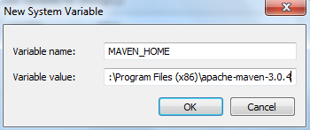
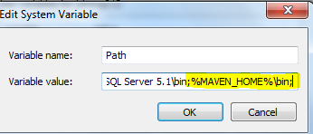
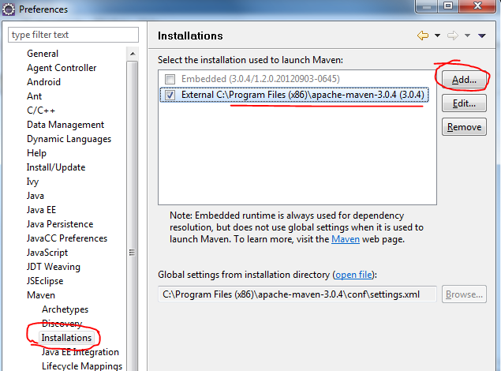

Maven管理的好处
- 项目构建。Maven定义了软件开发的整套流程体系，并进行了封装，开发人员只需要指定项目的构建流程，无需针对每个流程编写自己的构建脚本。
- 依赖管理。除了项目构建，Maven最核心的功能是软件包的依赖管理，能够自动分析项目所需要的依赖软件包，并到Maven中心仓库去下载。
A)管理依赖的jar包
B)管理工程之间的依赖关系。Eclipse配置maven
- 下载apache-maven-3.0.4 ，下载地址：http://pan.baidu.com/s/1i51FMr7
配置环境变量
1、新建环境变量MAVEN_HOME

2、新建环境变量MAVEN_HOME

完成之后，检测一下（必须先配好Java的环境变量）,进入CMD输入12echo %MAVEN_HOME%mvn -veclipse中的maven重新定位一下，点击Window -> Preference -> Maven -> Installation -> Add进行设置
- 配置本地仓库
1、手动创建本地仓库的地址为：D:\taotao_maven
2、修改C:\Program Files (x86)\apache-maven-3.0.4\conf\setting.xml文件，在节点下新增一行： 1<localRepository>D:\taotao_maven</localRepository>